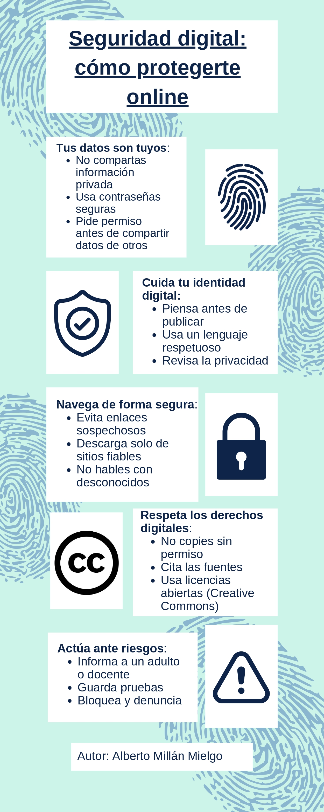

Descripción
In Savouring Science, we work with digital tools like Padlet and Canva to share our findings and collaborate with peers.
However, just as we follow safety protocols in a science lab to avoid accidents, we must follow Digital Safety protocols to protect our identity and digital footprint.
In this section, we will learn how to:
Collaborate safely: Sharing ideas without revealing personal sensitive data.
Respect Intellectual Property: Always citing our sources and using Creative Commons resources (like we do in this project!).
Manage our Digital Footprint: Being aware that what we post today in our collaborative walls contributes to our online reputation in the future.
Remember: A great scientist not only discovers the truth but also communicates it ethically and safely.
